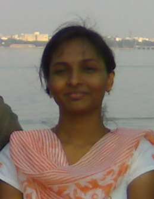

The Yearbook - Commemorating 2005-09!
Spandana's profile information
Name - SpandanaBirthday - 7th May
Email - spandana@students.iiit.ac.in
Address - Nelakondapally , Khammam
Phone - 9963657215
Testimonials written by Spandana
Spandana's Album

Default caption
Testimonials
harshita wrote-luv ya spandy :-* ...i ll miss u
Satish Chandra Prasad wrote-
well spandana .... nee gurimchi naaku telidu kaani maa gvs gaadu antala roju nee gurinchi pogudata unte neeku testi rayalanipistundi ,first year papam chala sarlu naa place kosam vachedanivi kaani nee place ki vellalanti telusuga asalu full ga north surroundng edo teda ga undedi , kaani neeku kastame anuko , neway sorry fr tht , tarvata ofcourse asalu matladaledu anuko neeto , kani frm tht i heard well u ra jovial person , nice friend and sensitive , asalu maa reddy gaadiki ee madya 2 much best friend ayipoyavu , malli counters 2 much vestavu antaga
 , neways all da best fr ur future !!!
, neways all da best fr ur future !!!Vamshi Velagapuri wrote-
hmmm..ee ammayini first time IPE 1st year exam center lo kalisanu..Sri Saraswathi Vidyanikethan,nellore anukunta if i'm not wrong..inka gurthundhi you wore a maroon+brinjal+lighting(donno what that material.....he he
 ..pattu daralemo
..pattu daralemo  emo donno )dress with a black high heeled footwear...
emo donno )dress with a black high heeled footwear...
appatike ee ammayi chala baga chadvuthadani
 campus antha talk..eppudu chusina top 30 lo undedhi rank list lo...first time a roju chepparu ee ammaaye "G " Spandana ani(manam koncham week anukondi ee matters lo)..so a roju velli adiga exam ela rasavu ani..if u recall i asked you at the petrol bunk where we used to stand for our collge bus...hmm na memory gurinchi rasinaltundhi antha.sare...
campus antha talk..eppudu chusina top 30 lo undedhi rank list lo...first time a roju chepparu ee ammaaye "G " Spandana ani(manam koncham week anukondi ee matters lo)..so a roju velli adiga exam ela rasavu ani..if u recall i asked you at the petrol bunk where we used to stand for our collge bus...hmm na memory gurinchi rasinaltundhi antha.sare...
Paina cheppina vidanga ne ee ammayi chala kasi...eppudu chusina Top 30 lo undedhi..migatha vallu ekkado undevaru a tarvata..koddi rojula tarvata first girl rank entha ante ma vallu emenu teesesaru a consitency chusi..50 ra..75 ra 60 ra ani cheppevaru..
inka iiit-h vishayanki vasthe..truth to be told eppudu sarigga matladadanukondi..
....nannu chudagane diagonal ga vellipothaventani aduguthundhi ? em cheppali..avoiding a,afraid of a ante ivevi kadane cheppali...your goals are not worth delaying aandhuke..ninnu apaledhu..achive chesaka straight gane nadustha le edurupadithe.. !
Lydia ichina inputs nundi..nenu vinna konni jokes
 nundi..oka set of jokes lo nuvvu queen aypoyyavu..! nee gola vere set aythe matram..serious ga coaching teesukovali ..a set jokes e aythe, emantanu
nundi..oka set of jokes lo nuvvu queen aypoyyavu..! nee gola vere set aythe matram..serious ga coaching teesukovali ..a set jokes e aythe, emantanu  !
!
hmm...Eppudu chusina Plz Plz Plz dont disturb ani untundhi status msg malli antundhi..aslu eppudu ping cheyyavani....
Yukthahar effect emo kani..chala sannaga ayyav
 iiit-h ki vachaka..
iiit-h ki vachaka..
Ennenno shikaralanu adhirohinchi..ento ethukuku eduguthavani ashisthu...
All the best for your future.
iltu,
Vam
Prashasti Gupta wrote-
sweeet girl...PJ queen...helpful and frank...has worked her way with hindi ..
All in all very nice girl..
all the best
Siva Reddy wrote-
ahh I forgot these
all the best. Have a nice time at BOA.
I wish everything goes as you think.
Siva Reddy wrote-
She is good at heart too. She deserves
 for her dedication to samvedana. keep it up.
for her dedication to samvedana. keep it up.
She can also pull your legs. Many don't know about this. She is very good at it. ela dobbutaavu alaga. daaniki kuda oka
. It is very funny when she is playing with someone. But it is easy to play with her too. I think she is childish and thats one of the reason I stopped playing with her. (protecting myself in cases when I am silent) She is very sensitive so be careful.
She loves her family especially her father and uncle. half of the time she talks about them and the other half about their school friends. Her taste for fashion is also good. Thanks for the shirt. awesome selection by you and namrata.
Most of the time you can see a blush on her face which is cute. She can bombard anything on your face. A straightforward and a frank girl. This is good in many cases. kasidi kuda. She takes a decent care of her academics.
You are amazing with all the qualities you have now. In one line she is the person who cares, shares, a good comedian
, family girl, a good friend, fathers daugther, punch dialoguer, kasi and many more. chaala What I can suggest you is to discard your laziness (go for jogging ), be rough (don't be sensitive), and less straightforward (with your close ones). Thats all. Sorry if I have hut you somewhere.
Thanks for being a good friend of mine.
Bye

Siva Reddy wrote-
I first encountered her during my R & D showcase demo in 2nd year. She listened to the whole crap (my project demo) patiently which left a good impression of her on me. From then I used to observe her but never minded much about her.
The second encounter was during my placement tutorial. She listened to my complete tutorial which should have been painful. This further left a good impression of her. Then I decided to talk to her and know her and be a friend.
After that, now and then she used to ask some linux doubts which I worked hard to clear
. In this way I was able to talk her. During IEIR assignment, I started talking to her very freely. After knowing that she is from a village adjacent to my village, I was shocked. How can a village girl from our area enter into IIIT. vurudaaanaa . That is really amazing and inspiring. kudos to you At that moment, I decided to be a friend of her.
Coincindentally, I was present during her crop presentation and asked some doubts (the topic is interesting
 ). After that some miracles happend, we were finally very good friends.
). After that some miracles happend, we were finally very good friends.
On the first day of our freindship itself, she told me everything about her as if I had known her from many years. This is amazing. I seriously appreciated it
. She is like an open book who does not hide any secrets.
OMG for the first time I listened to her joke and forgot to laugh. I was thinking how can she make such a joke. How is her brain designed ?.
Its really tuff to understand her joke. Normal way of thinking cannot help you. I felt bad that I missed several jokes of her in the past. She might have come from PJ. Please release the book which pratheek was talking. I will buy the first copy
P Sharat Chandra wrote-
Very down-to-earth in nature. OMFG!! you seem like one Bigg PJ Queen, Goddess infact, who is capable of making even Sashi slap himself. I bow to thee. I really like the sheepish smile that you give after torturing people around you. May you have the best in life, take care.
Prateek G V wrote-
The most creative girl of our batch. She is frank and helpful. Your jokes are simply superb
. If you ever plan to write a book on your jokes, I would love to be the co-author. Remember we had a chat of robbing BoA. Now that we have many new entries, I am thinking of writing the script again. In the mean time you decide on the casting crew. Oceans 7 will surely be a big hit. Thanks to Samvedana that I came to know more about her.
You raack girl!
Good luck with you future endeavors.
Navatha Tatineni wrote-
Spandy... is the name I have given her in the very first year and everyone calls her the same
One would get the impression of a "calm
and innocent" girl after seeing her, but believe me she is neither of the two
Its all sounds the same if I start talking about her comic skills
all over again when most of the people already did.. They can describe her better than me as I stand "speechless" for her oneliners.. Ofcourse, sometimes speechless for the sharpness of her brain and sometimes speechless just thinking.. "Oh God y me???" Anupama is the only girl who sincerely likes this girl's so called jokes... Hats off Anu
Spandy is very lazy.. One can surely address her as the "Lazy Lattif".. Whatever might be your proposal to her, be it going to a movie or the pani puri or atleast the coffeeshop... The answer is "Abba opika lede".. We are all tired of listening to her excuses
Also, she is the person listed next to me in the top-10 list of those who sleep for most of the time
She is almost into tears even if she doesn't write a class-test well.. "Asalu baga rayalede" is what she says after every exam. She cannot at
all, at any cost and by any means control her excitement whatever the situation might be. Never watch a horror movie along with spandy, even if you watched it earlier or not. Suppose you watched it earlier, then she kills you every minute asking for what happens next which highly irritates the latter and suppose you din't watch it earlier, then you need not watch it any further as spandy reveals out the suspense (infact tries to
) which almost kills your excitement
All the very best for your future Spandy
Will definitely miss your one-liners. Keep in touch.K.Divya wrote-
IIIT ki ragane ee NKP saruku Spandana Gella ninchi Spandy ayipoyindi
Spandy...the very utterance of this name gushes back all her jokes to my memory. She's got this Oh-dear-Lord sense of humor. You might think this is an exaggeration but nooooo...you have to be there to believe it. Hear her jokes and kill me if you are not stupefied. I'm always awestruck with the level of complications involved in her jokes
Sometimes she had to explain how she actually came up with that joke and that joke actually meant There are few classics that have left our minds scarred forever...like the Pushdown Automata, Aditya 369 (this one was actually good ), chandramukhi, pushpa-this one is the latest (oh yesss...we have actually titled these classics ). We also had this idea of creating a community of all the PJs dedicating it to her but I don't know why but we never put that into practice (yeah...now, too, is not too late ) The moment she cracks a joke, you can always see her blushing with a wide grin and Anu next to her clapping and encouraging her  But I must confess Spandy, our lives at IIIT wouldn't have been this great and lively without you and your sense of humor
But I must confess Spandy, our lives at IIIT wouldn't have been this great and lively without you and your sense of humor
Along with this awing sense of humor, God has also gifted this lass with tons of sweetness. She is an amazing friend. She has a lot of patience and is always very helpful and caring. She is very dedicated and sincere to her friends and acads...Yes, she is a very hard-working gal.
Hey Spandy...I will always cherish the time we spent. You are a real person for me. Wish you all the good luck in the world and success in all your future plans. Be the way you are...You are just amazing. Will miss you and your jokes. Love you lots spandy
Aniket Sharma wrote-
She was with me in the english classes. Didn't used to say much, and I never bothered her, thinking maybe she was too conservative and all. We participated in the Rangoli contest in the first year and took the first prize
Also, she was one of the people who I interviewed in my first year for the article on JV and I was amazed at how candid she was in expressing her opinions. But well, I never did talk to many of my batch girls, till the final semester. Course after course passed by, with Spandana only coming in at the last moment to sit beside Khatri and would give the attendance and walk away. I don't even think we passed as much as a smile to each other. But yeah, we did used to leofy Khatri a lot after her.
One fine day, in the final semester, the two of us alongwith Dharmeet went to the old age home in Kukatpally. That trip itself changed a lot in me. Besides other things, I also talked to Spandana for the first time, and I was amazed at how completely candid a person she was. Talked about a lot of things. Hat's off to her for going to school 30 km from her home to attend classes. I wouldn't do that for the life of me.
After that, I somehow felt like I should never join in the leofying of Khatri we do in her name. And I've stuck to it, more or less. Have interacted with you a few times since then, and you always come across as an innocent person without many inhibitions. It's a thing I admire in people. There aren't many like that.
We somehow always talk as if we're very good friends, or have made a pact to become very good friends. I like that a lot. I hope we work together in BoA and have fun. And any time you want a tree to be climbed or any mangoes to be picked, you have my number
Memories: Interviewing you in the first year, picking mangoes.
Tags: Girls, Samvedana, BoA, 8th sem.
Mahesh Raja wrote-
I have had some interaction with this girl when we used to be physics TAs. we used to have fun when we had to correct papers. Shivudu anna always tries to play pranks on her. From what i know she has a childish heart and easily gets frustrated over things. I think she is a bit lazy too ..
But greats me nicely when ever i meet her. sorry if i am wrong .. all the best
Srirang Ranjalkar wrote-
I know spandy from my inter 2nd year days. She was my brother's class mate. Never spoke to her before coming to IIIT. Just knew that there's a candidate called Spandana from my brother's batch. Thats it!
After coming to IIIT, I came to know that Spandy is also in the same house as I am. I thought she will be very active and can be a great help to the house. But I was wrong. She never does anything for the house, except for the singing competition in first year. That was an awesome performance. We sang "Sasivadane" and her voice always standing out of the group. Win/Lose doesn't matter all that matters is fun
Also I cannot forget about her "Randaka randaka" performance in Felicity '06 for which they won a prize. I know you would hate me having written this line here. But to be very frank, as an audience, I seriously enjoyed the performance. (did full racha racha
)
And the next time I spoke to her was in 3rd year, when we were going to Spoorthi. And again, it was fun. I kept pulling her leg for not knowing Hindi
 and she couldn't do anything but give back a smile in reply. It's always fun to tease you spandy.
and she couldn't do anything but give back a smile in reply. It's always fun to tease you spandy.
And then comes 4th year. IBCT finals. Well, it was she who started the topic of cutie pie and all. I didn't say anything. ANYTHING. And somehow everybody came to know about G1 and G2.
It was real fun teasing you guys on the ground. But the story took a twist with the entry of G3.
"Kasi" in studies.
So there's spandy still cracking all PJs, teasing others and in an illusion that she speaks quite fluent Hindi
.
But she's truly a great friend.
I always behave as if I've taken someone for granted. So incase, I've ever hurt you please don't take it to your heart and take it easy.
All the very best for your future and keep rocking as ever.
yours
Cutie pie

Lydia Manikonda wrote-
2nd part
I forgot to mention many many things but I wanted to say one more thing
I'm really gonna miss you a lot!!
And be the way you are Spandy!!
Luv u loads
G. Rohit Bharadwaj wrote-
Thanks to IJCNLP, I got to know this girl. Most fun-loving and equally good(I mean bad) at cracking jokes
She is truly helpful given the fact that she is involved in various activities of NGOs much before samvedana has evolved and of course samvedana
. On the other side of it, I wouldn't have got over the project and assignments in WDKM, thanks for that
Always try to crack jokes on every damn thing and ends up on the other side of it most of the times
. All in all a seriously innocent, good, helpful and very sensitive girl who cares for her friends..
All the very best,
Stay in touch,
cheers,
rohit
Deepti wrote-
[Contd...]
I cannot tell you how much I love you for your jokes [Girls, I seriously enjoy her jokes ya, moment of truth it is!]. I love you for your helping nature, your passion for helping others.. You rock and rock so hard that the richer scale shows a maximum reading
[If talking about Spandy, talk in her language man!]
Loads of love and best wishes for everything
Deepti wrote-
Never really known the hidden talent she had in the first year..Then came 2nd and 3rd years and we became closer and closer and I started realizing how talent she is..Fourth year, she surpassed all our expectations (fears??)
and I daresay, there is nobody on Planet E, not even Sashidhar, not at all Samrat who can come even 10 inches closer to her talent..
I keep telling her that I want to study her brain patterns, when she cracks us with her jokes, how exactly does her brain work, I always wonder.. She has not given me permission to do so,I haven't stopped asking her 'out'
..
Spandy, you are soo soo wonderful, I have no words to write, so i am not writing it
Jokes apart (difficult to do so, nevertheless ), you are one of the most amazing people I have ever met.. You are so kind and so helpful, we wouldn't have even half enjoyed our stay here in IIIT as we have now enjoyed, without you.. You complete all of us, sweety (Ref: Jerry Maguire)
Few future plans I have for her [apart from acting as a cupid
]:
+ Note down every dialogue of hers from now on, believe me, everything she says is funny.. I probably should carry a voice recorder.
+ Build a statue for her some where in IIIT, along with Anupama - the only homosapien who encourages her to joke more
It will be more like Spandy grinning ear to ear, 2-3 of us crying beside her and Anu clapping and grinning.. You get the picture, dont ya?
Few cases where yours truly was a victim:
+ Me: OMG, Rofl

Spandana: Ya, you can roll on the floor, the room looks clean today
Me : ayya baboii Spandy, champesavee
+ Me: Ra ra mess ki ra ra (chandramukhi style) [I hang my head with shame for cracking that joke, but do read further]
Spandana: chaka chaka chaka chaka (in the same lines of laka laka laka)
Me: Why Spandy, why?? Why me

+ ....... the list is endless
Anupama Gali wrote-
Sugar,Spice and everything nice- these were the ingredients God used to create His child. He accidentally added chemical X and thus Spandy was born. Took the help of this dialogue from powerpuff girls because I always get reminded of this whenever I see her. All 13 of us keep wondering what it must have been that keeps Spandy's creative brain on run.Please don't thrash me now because I called her creative
She is the one whom we all adore as the most reliable friend. Has never said a "NO" to anybody and is ALWAYS ready to help. Works hard and is very sensitive. Looks cute and gets more pretty when she blushes. Spandu, Stay the same because you're the best this way!
Remember that one of your best fans is here in IIIT and keep in touch with her!
Ending this with her jokes:
1. What does a lazy father name his daughter?
Answer is "Push""Pa"
2. X: Raa raa..mess ki rara..
Spandy: Chaka chaka chaka( Laka laka laka laaga !)
3. Y's Status mesg: Wish I had a time machine
Spandy: contact Aditya at room no:369
I loved this one like hell!Tavva Rajesh wrote-
very kind-hearted... always thinks about not to hurt anyone
her jokes (as they are called so) dont actually make you laugh. But they always make you think how she came up with such weird thoughts
Even to come up with such mind-boggling jokes is very difficult
Keep up the good work, and hope you will keep entertaining us with your one-liners
All the best for ur future
Lydia Manikonda wrote-
One of my best buddies of my life. We've spent 6yrs studying together. I never know that after my higher secondary I'll study along with her in the same college. When we met for the aieee counselling in NITW, I was so excited that we both got admission from the same University.
Well, she is a very nice girl and very funny too. One thing I get angry up on her is, whenever we ask her to accompany us, the same old answer is "assalu opika ledhe"..
she always used to ask us to wake her up in the morning for PT, but when we do, we've got the same answer or "naaku assalu ontlo baaledhe" Got fed up with the same answers every time. But she is a very funny girl.
She is very caring and actually tries to help everyone in need. Talks a lot. And her sense of humor.... hilarious!!!
She is one of the few people who are actually very close to me and always used to give her best to help me.
Hope u'll remember me no matter you make new frends in your life
Luv u loads sweety.
sushma nadella wrote-
"Spandy" is what everyone calls her..well she is my alterego when it comes to P.T for she is equally lazy and thanks spandy for the company every morning even in 4th year...
. She is very famous for her jokes and there is always a hidden logic in her jokes and its kinda hard to know what it is until she explains..her trait.Her curiosity levels are pretty high...I warn u never have her next to u while watching horror movies..Jus kididng spands..hmmm..This girl is very sensitive, forgiving, genuine and kinda person on whom u can rely in times of trouble.Takes amazing courses each sem and makes us feel lucky for not havin taken them..thanks yaa A girl who has gradually transformed from her 1st year to 4th year..with her one dialogue never changing when we ask her out...(Gurtochinda madam?) Neways spandy...congrats on getting into BOA..I hopw u will hav fun over thr with ur best pal nammu All the very best ...will miss u
P.S:: I have a confession to make spandy..even though I always try to make fun of ur jokes calling them PJ's lemme tell u none of my yukthahaar lunches and dinners would have been so fun filled and complete without ur cool jokes..Keep Rocking yaa
Namrata Suri wrote-
Spandy as she is popularly known
is one of my bestest friends. She has supported me through thick and thin and I will always love her for being there for me coz I can be a pain sometimes .
She is a very genuine person who thinks twice before doing anything coz she does not want to hurt anyone. Hardworking, dedicated and loyal, I am sure anyone who meets here will realize that she has a wonderful presence and can be a lifelong buddy.
Enough praising... Spandy could actually give Chuck Norris a complex. Her jokes (or whatever that is
) keep us in splits and her creativity is mind boggling. I will remember her for her awesome one liners, the trips to the icecream vendor, playing bingo in practically every class and the list is just endless.
I am sure we will have many more fun moments in the future coz we will be working at the same place. Spandy you are the best !!!!!

{kind=link}